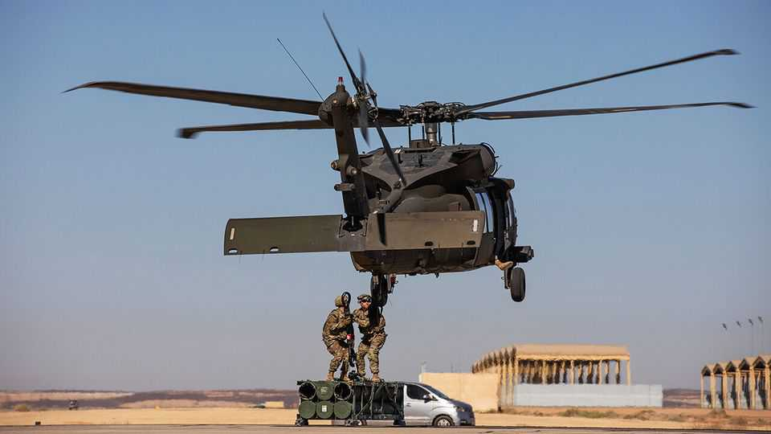

War in the Gulf has weakened two of America’s Arab allies
Egypt promised to fight and Jordan promised to stay neutral. Neither delivered

Aug 13th 2026
NEARLY TWO years ago King Abdullah of Jordan told Abbas Araghchi, the Iranian foreign minister, that his own country would not be a “battleground for regional conflicts”. A decade earlier, while campaigning to be Egypt’s president, Abdel-Fattah al-Sisi made the opposite vow to Gulf states: should their security be threatened, Egypt would be “one step away”.
Yet today Jordan is at the centre of a regional conflict between America, its closest ally, and Mr Araghchi’s government. As for Egypt, it may be one step away—but it has stayed there. Though the Gulf faces its greatest threat in 35 years, Mr Sisi has offered little beyond words.
The broken promises are revealing. Jordan is paying a price for a war over which it has little control. Egypt has been sidelined as a mediator and military power. They have long sold themselves as pillars of the regional order. But the order looks wobbly—and both countries look lost.
Surrounded by stronger neighbours and bereft of natural resources, Jordan views close ties with America as the key to its survival. In return, America has made it one of its largest recipients of foreign aid. Thousands of American troops are deployed at air bases such as Muwaffaq Salti (pictured), which host fighter jets, aerial-refuelling tankers and other warplanes vital to the war with Iran.
Hosting them made Jordan a target for Iran. It is also unpopular. Hundreds of politicians, retired army officers and other prominent Jordanians recently signed an open letter calling for American troops to leave. Yet the king cannot afford to comply. Last year Jordan received more than $1.6bn of American aid (3% of GDP). This month America pledged another $355m.
Jordan needs that money as the war batters its economy. Missile attacks forced flight cancellations and scared off visitors; tourism revenue, already whacked by the war in Gaza, has fallen again. Jordan relies on natural gas from Israel for half of its electricity. Israel suspended exports when the war began, fearing Iranian strikes on its rigs. That forced Jordan to switch to diesel, heavy fuel oil and spot cargoes of liquefied natural gas. Though exports resumed in April, the IMF expects Jordan’s energy-import bill to be 36% higher than in 2025.
Iran has tried to deepen a schism between the king and the public. Even as its missiles and drones hit the kingdom, it claims it has “no hostility” towards the Jordanian people and that America, not Iran, has “violated your territorial integrity”. Such appeals may find little purchase: many Jordanians view Iran as a threat. Still, the war is a dilemma for a government struggling with domestic discontent.
Egypt’s economy is holding up better. It is expected to grow by 4.6% this year. The IMF has just unlocked the latest $1.8bn tranche of a four-year loan agreement. Tourism, which accounts for 13% of jobs, remains strong. More than 9m people visited Egypt in the first half of this year, a 3% increase on the same period in 2025.
At first glance Egypt’s other big sources of hard currency, revenue from the Suez Canal and remittances, look solid as well. The former rose to $2.4bn in the first half of 2026, up from $1.8bn in the same period in 2025. The latter reached a record high in the year to June. Both could be lagging indicators, however. Iran-backed attacks on shipping in the Red Sea could dent canal revenue. As for remittances, a lot comes from Egyptians in the Gulf. A prolonged slump there would mean fewer workers to send money. Meanwhile, the government has raised some electricity tariffs by 12%.
For now, though, Egypt’s biggest weakness is status, not solvency. After the Hamas-led massacre in Israel on October 7th 2023, Mr Sisi was in high demand. His spy chiefs have a long relationship with the Hamas leadership in Gaza, owing to their shared border. Antony Blinken, America’s previous secretary of state, visited Egypt seven times in the year after the massacre, more than any other country bar Israel. The final negotiations for a ceasefire took place in the Egyptian resort town of Sharm el-Sheikh in October 2025.
Egypt has been far less relevant in the war with Iran. It has been eclipsed as a mediator by Pakistan, Turkey and Gulf states. Nor has the Arab world’s largest army done much to defend its neighbours—even though the Gulf has given Egypt tens of billions of dollars in aid since Mr Sisi seized power in a coup in 2013.
Officials in Cairo argue that Gulf states are receiving help from other allies, and that Egypt has other threats on its borders. Still, its inaction has irked its friends. In March Anwar Gargash, the diplomatic adviser to the president of the United Arab Emirates (UAE), complained about “major” Arab countries sitting idle. “Where are you today in a time of hardship?” he asked.
Egypt did deploy a squadron of Rafale fighter jets to the UAE—although it only announced this in May, a month after an initial ceasefire between America and Iran took effect. It was noticeably absent on August 7th, when Saudi Arabia signed a mutual-defence pact with Pakistan and Turkey, although Saudi officials suggest it could join later. Yet staying out of the war has not bought it protection. Last month a drone struck a natural-gas facility in Damietta, on Egypt’s Mediterranean coast.
The tripartite pact is a glimpse of the Middle East’s future. Fearing they can no longer rely on America, regional countries will need to take more responsibility for their own defence. That will be an uncomfortable place for Egypt and Jordan.■